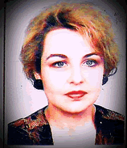

Адвокат Нели Цанкова е член на Адвокатска колегия – Стара Загора от 1994 година.
Завършила е специалност Право в Юридическия факултет на Софийски университет „Св. Климент Охридски“ и през 1992 година е назначена на длъжност Юрисконсулт в дирекцията „Държавни имоти” в Община Бургас. През учебната 1992/1993 година е Хоноруван преподавател по дисциплината „Вещно право” към Юридически факултет на Бургаски свободен университет.
Самостоятелна адвокатска практика започва от 1994година, като преди това е работила като Районен съдия към Старозагорски Районен съд. Приета за член на Съюза на българските учени в България с Диплом за членство от 14.11.2002 година. Автор на редица статии в областта на Европейското и Международното право.
Владее свободно Английски език и разговорен френски. През 2008 година започва работа като правен консултант на територията на Обединеното кралство. Специализира в областта на Англо - саксонското право и Прецедента.
От 2012 година е Докторант по гражданско – правни науки към Варненски свободен университет „Черноризец Храбър”.
През 2013 година открива кантора в град София, където осъществява адвокатска практика и осъществява процесуално представителство за своите клиенти по Граждански и Наказателни дела. Осъществява защита и процесуално представителство в България и извън. Работи в сферата на Корпоративните, Административните, Изпълнителните и Обезпечителни дела. Осъществява процесуално представителство в досъдебното и съдебното Наказателно производство. Работи във всички сфери на Гражданското право и Защита на конкуренцията. Специализира в областта на Обществените поръчки и Арбитражните производства в и вън от страната.
Самостоятелна адвокатска практика започва от 1994година, като преди това е работила като Районен съдия към Старозагорски Районен съд. Приета за член на Съюза на българските учени в България с Диплом за членство от 14.11.2002 година. Автор на редица статии в областта на Европейското и Международното право.
Владее свободно Английски език и разговорен френски. През 2008 година започва работа като правен консултант на територията на Обединеното кралство. Специализира в областта на Англо - саксонското право и Прецедента.
От 2012 година е Докторант по гражданско – правни науки към Варненски свободен университет „Черноризец Храбър”.
През 2013 година открива кантора в град София, където осъществява адвокатска практика и осъществява процесуално представителство за своите клиенти по Граждански и Наказателни дела. Осъществява защита и процесуално представителство в България и извън. Работи в сферата на Корпоративните, Административните, Изпълнителните и Обезпечителни дела. Осъществява процесуално представителство в досъдебното и съдебното Наказателно производство. Работи във всички сфери на Гражданското право и Защита на конкуренцията. Специализира в областта на Обществените поръчки и Арбитражните производства в и вън от страната.